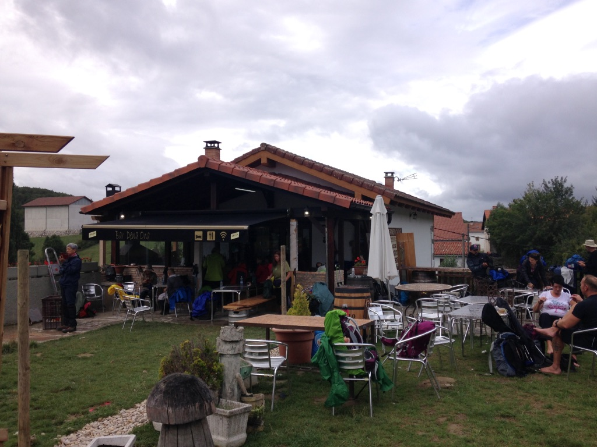
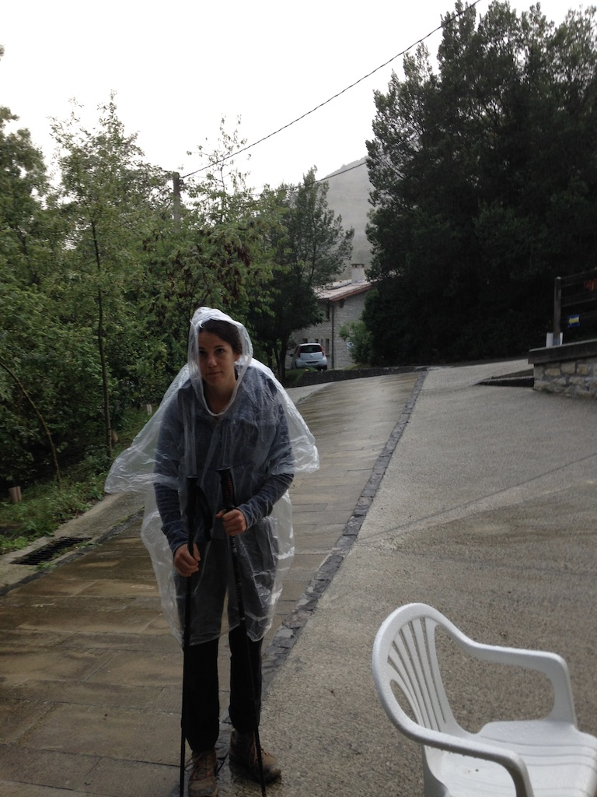
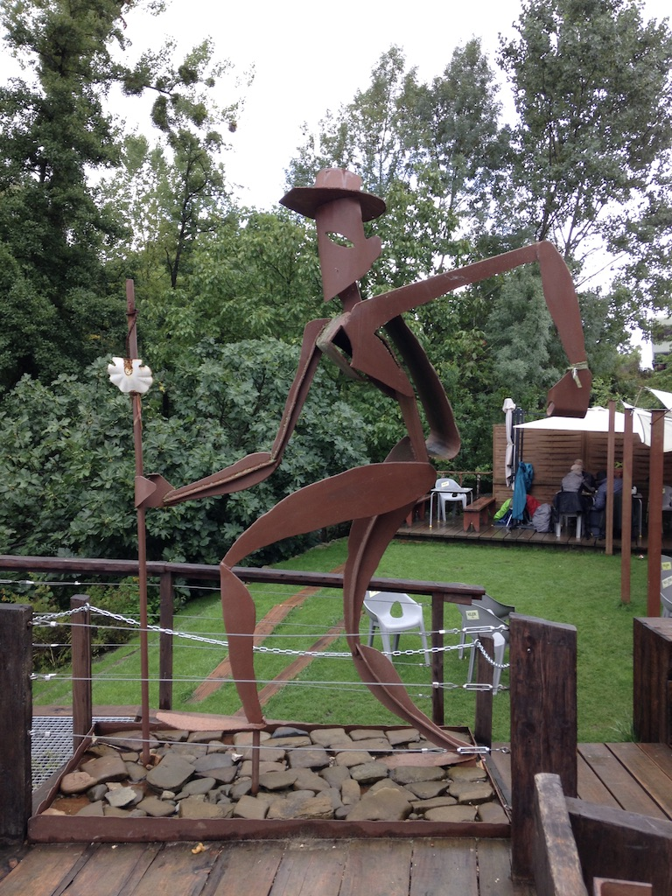
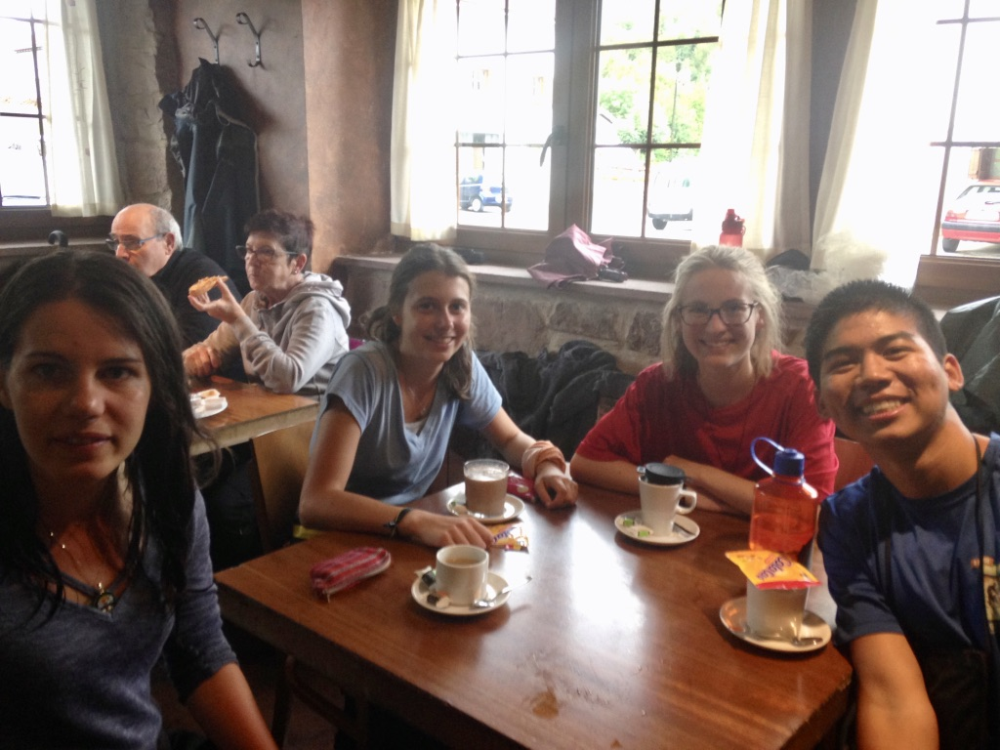

Through the window I see Sun-bathed flowers and untouched rock, Blades of grass and untrodden walks, Endless possibility.
I ask of you Time To yield your determined hand So I may dance Forever with Infinity.
I run into Matilde and Franca while departing from Roncesvalles. They’re headed in the opposite direction, back toward the albergue, when they call out to me.
“Phiiiiilll! Heeeey we’re gonna make some tea! Would you like to join us?”
The words of a wise hospitalero echo in my mind: The Camino will give you everything you need. Surrender to the Way. Be open to what comes your way, he said. In other words, say yes to life unless you have a good reason not to – there never is.

We go back inside and attempt to make the tea. Matilde and Franca fiddle with the stove while I watch and provide moral support. Unfortunately the stove is beyond the abilities of my fellow Germans, so I give the task a go myself. I fail miserably. Having failed, I go to find Matilde and Franca and discover them chatting with a young Belgian near the vending machines in the adjacent kitchen.
I introduce myself and join the conversation. The Belgian’s name is Marieke. She seemed excited about the fact that we were young and spoke fluent English, unlike many of the other pilgrims here. Some minutes later, Franca and Matilde go back into the kitchen, leaving Marieke and I to ourselves.
Marieke was in her 2nd year of medical school. She’s on the Camino seeking balance, answers. It’s her 3rd one, though she has never walked its entire length. Her acute sense of self-awareness, her clear display of buoyancy, and her attentive hazel eyes catch me off guard. I am mesmerized.

The day is gray and rainy, a complete contrast to the sun-painted stroll of the prior. We decide it’s best to walk together.
I walk with Marieke while Matilde and Franca trot together a few meters ahead of us. Marieke is wearing a clear, plastic trashbag she claims is a poncho. “That’s not a poncho, that’s a trash bag!” - it takes her awhile to warm up to my humor. Once we’re beyond the formalities, Marieke and I begin to talk about every imaginable topic a human-being like me loves: psychology, purpose, meaning, meditation, freewill, learning, being. Eventually we exchange the intellectual brevity for emotional depth: we talk about pain and love, relationships and ourselves, the finitude of our time in this world. We get vulnerable.
I was growing attracted to her and tried to brush it off because I didn’t want to feel this way – “this is not why I’m here,” I remind myself. But love and attraction don’t quite adhere to our more sensible selves, and I am reminded to surrender to the Way. “The Camino will give you everything you need,” echoed the Hospilatero. But was this something I needed?
As we walk on, I grow increasingly aware of the beauty surrounding us: the colors and smells, the rhythm of my footsteps, the movements of nature. My senses are heightened, and I feel incredibly alive. Marieke too is clearly captivated –– by the droplets of water hanging from the leaves, by the dewy smell of the moist air, by the simple joy of freedom. And before we’re aware of it, we arrive in Zubiri.

The single shower in our albergue is occupied. Matilde and Marieke inform me that there’s a shared shower space downstairs in the other building. I go, believing that it would be unoccupied by other pilgrims since we had arrived later in the day. As I make my way toward the other building, I see another young pilgrim walking towards it too, equipped with clean clothes and a small bottle of shampoo.
“Oh boy. I’m going to have to shower with another dude. Wait, there must be stalls. Yeah, it’s all good.”
There are no stalls. Only a long aisle with a single curtain hiding a row of shower-heads.
We go inside. He acknowledges me with a quick head-nod, and I nod back. We step into the aisle. I turn my back to him and began to take off my clothes; he does the same, I think. I’ve claimed one corner while he the other. And then we start showering, no more than six meters apart. I take my time, hoping that he will finish before me. He must’ve had the same thought, because we are both standing there for several minutes, showering together in silence, serenaded by the clashing of water against our exposed skin. Finally, I make the first move and finish my shower. He continues. I dry myself off, put my clothes on, and scurry away from the building. I report my experience to the girls, and they’re hysterical.
I see him again later, and we give each other a quick nod of acknowledgement.
“A man on the Camino told me he was walking because he wanted to find peace: peace with himself. Peace with nature. Peace with God.” – Marieke
The girls and I go to get a drink at the local bar. There we run into Stefan, the tall, lanky, 18-year-old Texan. He’s been drinking since 2pm and is clearly inebriated. We eat pizza - Spanish pizza! - and banter on about our respective home countries.
Marieke leaves early to catch some alone time, and I go and do the same. Back in the albergue, I reflect on the day and write in my journal. Later, I find Marieke sitting in the corner of the kitchen, perhaps also writing about her day.
I talk to a woman in her 60’s from the States. We exchange some stories, she about her career and children, I about my recent adventures and worries for the future.
She reassured me, “It’ll work itself out, so don’t worry so much. Hell, I’m still learning how how not to.”
I never grow tired of telling my stories to different people. Each retelling refined or redefined the meaning I derive from my experiences. I thank the woman for listening and sharing her stories.
Franca and Matilde return from the bar, and we join Marieke in the corner of the kitchen. Later we enjoy a community dinner with the other pilgrims, and when the wine has settled in our bodies, we retreat to our room and dream of the coming day.
